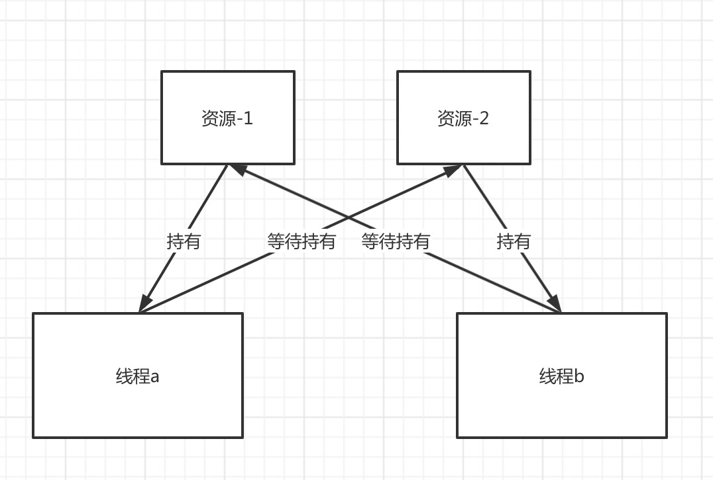

死锁就是进程由于争夺资源造成的僵持状态，无外力作用下无法向前推进。

图中资源-1被线程a持有、资源-2被线程b持有，同时线程a又请求获得资源-2，线程b又请求获得资源-1，这个时候线程a和线程b都处于等待状态无法向前执行就处于了死锁状态。
- 死锁的四个必要条件
1.互斥 一个资源在一段时间内只能被一个进程持有（占用）；
2.请求和持有 进程在请求资源阻塞时，对已获得资源保持持有不放；
3.不可抢占 进程已获得的资源在未使用完之前不能被其他进程抢占（剥夺），只能由自己释放；
4.循环等待 若干进程之间形成一种头尾相接的循环等待资源关系。
预防死锁的方法就是破坏死锁的四个必要条件
- 示例
1
2
3
4
5
6
7
8
9
10
11
12
13
14
15
16
17
18
19
20
21
22
23
24
25
26
27
28
29
30
31
32
33
34
35
36
37
38
39
40
41
42
43
44
45
46
47
48
49
50
51
52
53
54
55
56
57
58
59
60
61
62
63
64
65
66
67
68
69
| /**
* Package: com.litchi.demo.java
* Date: 2020/5/11
* Desc: com.litchi.demo.java
*
* @author liujicheng
*/
class DeadLock {
public static Object resourceOne = new Object();
public static Object resourceTwo = new Object();
public static void main(String[] args) {
new java.lang.Thread(new RunnableA()).start();
new java.lang.Thread(new RunnableB()).start();
}
static class RunnableA implements Runnable {
@Override
public void run() {
while (true) {
synchronized (resourceOne) {
System.out.println("Thread A lock resourceOne");
//停留5s让ThreadB锁住resourceTwo
try {
java.lang.Thread.sleep(5000);
} catch (InterruptedException e) {
e.printStackTrace();
}
synchronized (resourceTwo) {
System.out.println("Thread A lock resourceTwo");
}
}
}
}
}
static class RunnableB implements Runnable {
@Override
public void run() {
while (true) {
synchronized (resourceTwo) {
System.out.println("Thread B lock resourceTwo");
//停留5s让ThreadB锁住resourceTwo
// try {
// java.lang.Thread.sleep(5000);
// } catch (InterruptedException e) {
// e.printStackTrace();
// }
synchronized (resourceOne) {
System.out.println("Thread B lock resourceOne");
}
}
}
}
}
}
|
全文完。